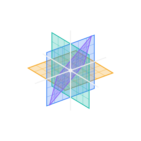
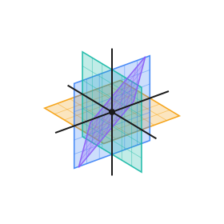

Nine Landings · Ala Eriri · Engine path
A Crossing
driven by the persistent kernelPassagesea —
—minutes
Waiting for the condition.
Preparing the crossingChoose a crossing.
A local deterministic simulation, on the engine path. No real route, service, place, or person is changed.

Setting the Passage